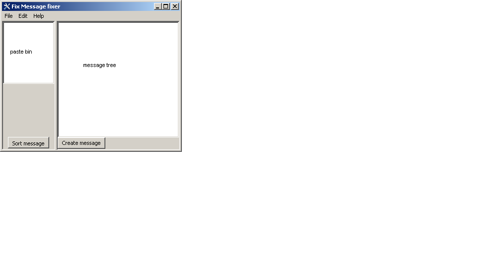

FIX-fixer can take any
standard FIX protocol message and convert it to an easy to read tree
format. The tree can then be edited and reformatted back to an pastable
message for copying into any test
.
File:
The file menu contains
three items:
- Load: load a presaved message into the paste bin
- Save: save the current paste bin into a file
- Exit: Launches the space shuttle into orbit
Edit:
The edit menu contains the following items:
- Clear: clears the paste bin and the message tree
Help:
The help menu contains the following items:
- Help: You're here right? Looking at the help file
- About: What's it all about, developers, version, writers
Paste
Bin
The paste bin is the text box on the
left hand side of the window. It is used to copy data into and out of
the program. It can also be used to edit the message.
Message
Tree
The message tree is the easy to read version of the message data in the
paste bin. Items can be added or removed by right clicking on the tree.
The tags can be edited by either selecting the item and selecting again
(two single clicks) or right clicking and selecting edit. Repeating
groups can be added by selecting the item and pressing ctrl+t.
Clicking the sort message button while there is a message in the paste
bin will cause the current tree to be cleared and the message in the
bin to sorted into a new tree. Clicking the create message button will
clear the paste bin and create a new message using the data in the
message tree. Tags can be dragged and dropped to any location in the
tree.
Other stuff to add
List of stuff to be added:
- FIX repository help (help tips, message content, message types)
- Templates
- Wizards